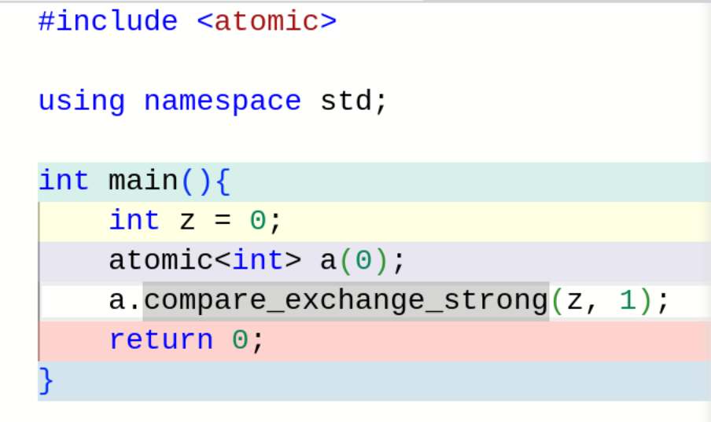
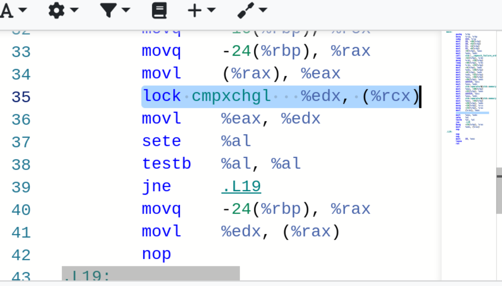
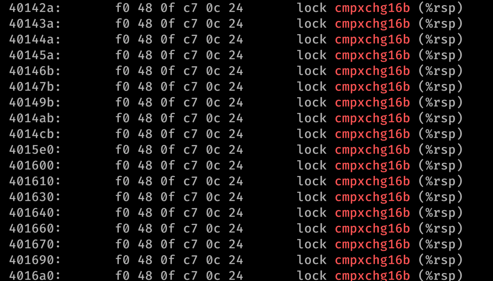

Veljko Petrović
Mart, 2023
<semaphore>counting_semaphore i šablonska je gde je (jedini) parametar maksimalna numerička vrednost ugrađenog brojačastop() i resume() slične operacijama lock() i unlock() klase mutex.stop() i resume() slične operacijama wait() i notify_one() klase condition_variablecondition_variable su namenjene za ostvarenje uslovne sinhronizacije u okviru kritičnih sekcija u kojima je međusobna isključivost ostvarena pomoću operacija klase mutex.condition_variable u okviru kritičnih sekcija u kojima je međusobna isključivost ostvarena pomoću operacija drugog binarnog semafora (sa stanjem inicijalizovanim na vrednost 1) izaziva mrtvu petlju.int main(){
cout << endl << "DINING PHILOSOPHERS" << endl;
thread philosopher0(thread_philosopher);
thread philosopher1(thread_philosopher);
thread philosopher2(thread_philosopher);
thread philosopher3(thread_philosopher);
thread philosopher4(thread_philosopher);
philosopher0.join();
philosopher1.join();
philosopher2.join();
philosopher3.join();
philosopher4.join();
}const milliseconds READING_PERIOD(1);
void Bank::audit(){
int sum = 0;
reader_begin();
sleep_for(READING_PERIOD);
for(unsigned i = 0; i < ACCOUNTS_NUMBER; i++)
sum += accounts[i];
reader_end();
if(sum != ACCOUNTS_NUMBER*INITIAL_AMOUNT) {
mex.stop();
cout << " audit error " << endl;
mex.resume();
}
}int main(){
cout << endl << "READERS AND WRITERS" << endl;
thread reader0(thread_reader);
thread reader1(thread_reader);
thread writer0(thread_writer0to1);
thread reader2(thread_reader);
thread writer1(thread_writer1to0);
reader0.join();
reader1.join();
writer0.join();
reader2.join();
writer1.join();
}<atomic> koje sadrži tipove koji označavaju da su određeni primitivni tipovi (int, recimo) atomički.store()

t1.join();
t2.join();
List_member* p;
assert((nullptr != l.unlink()) && "U klasi nema dovoljno bafera posle testa");
assert((nullptr != l.unlink()) && "U klasi nema dovoljno bafera posle testa");
assert((nullptr != l.unlink()) && "U klasi nema dovoljno bafera posle testa");
assert((nullptr != l.unlink()) && "U klasi nema dovoljno bafera posle testa");compare_and_swap operaciju sve što treba da uradimo jeste da je uradimo nad dve vrednosti istovremeno.cmpxchg16b i dostupno je na novim procesorima (Pogledajte da li se u /proc/cpuinfo nalazi flag cx16)clang a i on zahteva poseban tretman – struct koji koristite za DWCAS mora biti eksplicitno poravnan u memoriji na 16 bajtova što obično nije potrebno. t3.join();
List_member* p;
assert((nullptr != l.unlink()) && "U klasi nema dovoljno bafera posle testa");
assert((nullptr != l.unlink()) && "U klasi nema dovoljno bafera posle testa");
assert((nullptr != l.unlink()) && "U klasi nema dovoljno bafera posle testa");
assert((nullptr != l.unlink()) && "U klasi nema dovoljno bafera posle testa");
assert((nullptr != l.unlink()) && "U klasi nema dovoljno bafera posle testa");clang++ -O3 -pthread -std=c++20 -mcx16 -o lld lockless_double.cppobjdump -d lld|grep cmpxchg16b
x86_64 platformi (dobra uređenost) i kod koji je sporji nego da smo koristili mutex na ARM platformi zato što je ona vrlo sklona, arhitektonski govoreći, out-of-order egzekuciji.